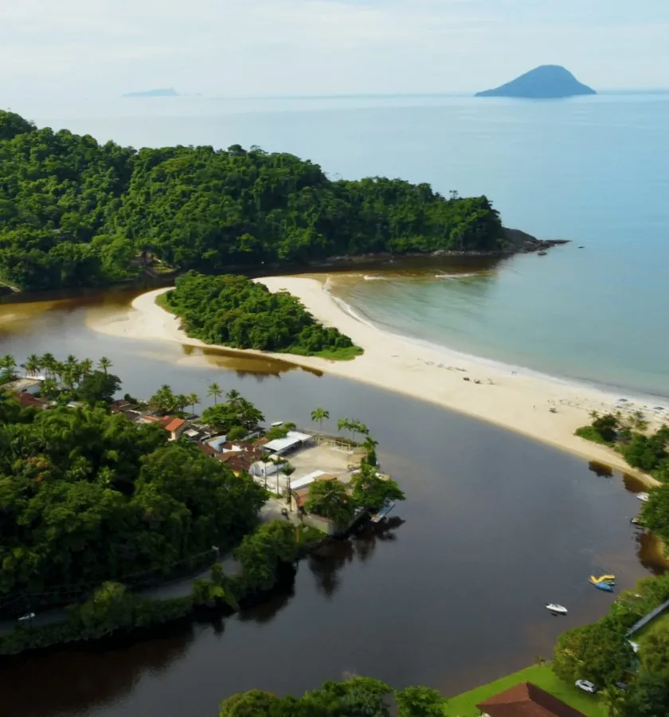

Nossa história
Pioneirismo, amizade, honestidade e respeito à natureza nas águas de Barra do Una, desde os anos 70.
Desde os anos 70
Não havia telefone celular nem GPS, não havia previsão do tempo e às vezes nem estradas.
- 40+
- anos de experiência nas águas de Barra do Una
- 3.000 m²
- de galpões na garagem náutica
- 10 t
- por embarcação, sem empilhamento
- 24 h
- de monitoramento por câmeras

Missão. Proporcionar infraestrutura e serviços ideais para a guarda, manutenção, compra e venda de embarcações, sempre em harmonia com o meio ambiente, para que os clientes possam desfrutar da natureza e dos prazeres da atividade náutica.
- 40+ anos
- de experiência nas águas de Barra do Una
- 3.000 m²
- de galpões na garagem náutica
- 10 t
- por embarcação, sem empilhamento
- 24 h
- de monitoramento por câmeras
Meados dos anos 70
Mas mesmo assim, em meados da década de 70, Amandio Alves Pinto, um apaixonado pelo mar, saía com o seu barco navegando pela barra do Rio Una, mar afora, atraído pelas belezas do litoral norte de São Paulo.
Um ponto de apoio
Foi por esta paixão e pelo seu espírito visionário que, ainda nesta época, ele começou a desenvolver em sua propriedade, na beira do Rio Una, as primeiras atividades náuticas da Marina Boreste, sendo ponto de apoio para amigos e outros navegantes.
Com o tempo
A necessidade de facilitar o acesso a outros amantes do mar se tornava mais latente, e a Marina Boreste, acompanhando esta tendência, se organizava e se estruturava para atender os seus clientes cada vez melhor.
Hoje
Administrada pela família, a Marina Boreste continua investindo constantemente em melhorias, está consolidada no mercado, e a satisfação dos seus clientes é a comprovação da qualidade de seus serviços.
E é neste clima de pioneirismo, amizade, honestidade e respeito à natureza que a Marina Boreste assume o compromisso de manter a sua embarcação sempre em boas mãos.
A marina hoje
Administrada pela família, a Marina Boreste continua investindo constantemente em melhorias.



Venha conhecer a marina
Rua Petrópolis, 215, Barra do Una, São Sebastião (SP). Segunda a domingo, das 8h às 17h.